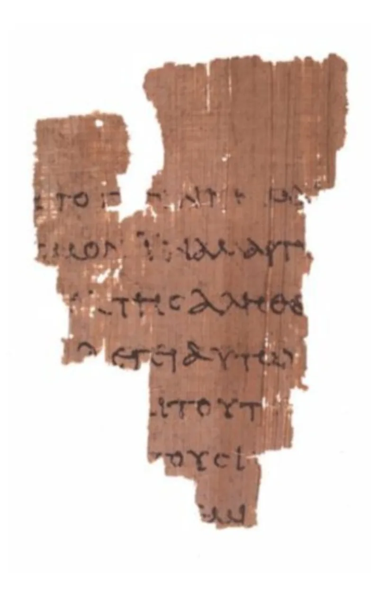
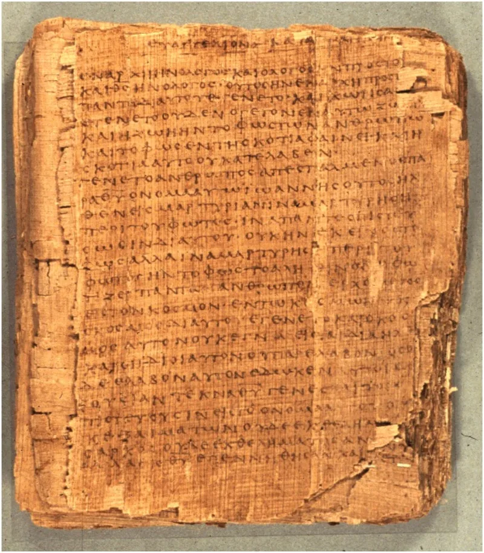

They sought to kill Jesus for calling God Father
ContestedMuslim scholars have a real answer here. Say so before your friend does.
What the Quran argues against
The Quran rejects a Son of God who is physical offspring (Quran 9:30; 5:17; 5:72; 19:88-92; 4:171). No Christian has ever taught that.
So the actual claim is left standing, unaddressed.
What the claim actually is
"Son of God" is a royal and divine title (Psalm 2:7). In Jesus's mouth it meant equality with God.
John 5:18 says the Jews sought to kill him because "he was even calling God his own Father, making himself equal with God."
The words that got him killed
John 8:58: "Before Abraham was, I am." They picked up stones. Mark 14:61-64: he says he is, and that they will see the Son of Man "seated at the right hand of Power and coming with the clouds of heaven" — the language of Daniel 7.
That was ruled blasphemy worth death. John 20:28: Thomas says "My Lord and my God," and Jesus blesses him rather than correcting him.
The Muslim answer, at full strength
Shabir Ally and Bassam Zawadi answer well. Son of God is used loosely all through the Bible — of Adam (Luke 3:38), Israel (Exodus 4:22), David (Psalm 2:7), peacemakers (Matthew 5:9).
John 8:58's ego eimi is not the divine name. The Greek Exodus 3:14 has ho on.
And the healed blind man says ego eimi in John 9:9. The strongest claims cluster in John, the latest gospel.
And Jesus never says: I am God, worship me.
How strong is this argument?
Strong for you on the documents, and honest about the rest. The "John is late" move is real scholarship, but it costs a Muslim dearly.
It concedes that the Gospels say what Christians say they say. And every one of these texts survives in copies from 200 to 450 years before Islam — P66 and P75 from about 200 AD, Sinaiticus and Vaticanus from the 4th century.
What to say
"Why was Jesus charged with blasphemy, if he never claimed anything more than being a prophet?"



How they answer this — at its strongest
They say Son of God is a loose title, and John is the latest gospel.
The strongest reply, argued by Shabir Ally and Bassam Zawadi, has five parts. First, Son of God is used loosely all through the Bible. It is said of Adam (Luke 3:38), of Israel (Exodus 4:22), of David at his crowning (Psalm 2:7), and of peacemakers (Matthew 5:9).
Second, the ego eimi of John 8:58 is not the divine name. The Greek Exodus 3:14 renders that name as ho on, and the healed blind man says ego eimi in John 9:9. Third, the highest claims cluster in John, the latest gospel, which reflects later church teaching. The Jesus of the other three prays, calls the Father the only true God (John 17:3), and denies knowing the hour (Mark 13:32).
Fourth, the claim in Mark 14:62 is one a Jewish agent of God could make, and blasphemy rulings were loose. Fifth, Jesus never says: I am God, worship me.
The verdict
Both sides have a case, but the texts lean your way here.
The retreat to late theology in John is a real argument with academic backing. But it is a costly win for a Muslim. It grants that the gospels say what Christians say they say. And it saves Islam only by taking up a doubt about sources that the Quran never allows, since the Quran tells Christians to judge by their Gospel (5:47).
The narrower rebuttals are weak. Playing down ego eimi ignores the stoning attempt that follows at once (8:59), and the bare form of the phrase. Playing down Mark 14 must still explain a death sentence for blasphemy. John 20:28 has no soft reading at all. My Lord and my God is said to Jesus, who blesses the man rather than correcting him.
And the manuscript point is untouched. The divine claims sit in physical copies older than Islam. Contested, then, but leaning hard against the Muslim side on the documents.
Sources
- Answering Islam — 'The Son of God in the Bible and the Qur'an'
- Sam Shamoun — 'An Examination of John 1:1, 8:58 and Colossians 2:9'
- Islam Reigns — 'Refuting the Divinity of Jesus: Analysis of John 8:58'